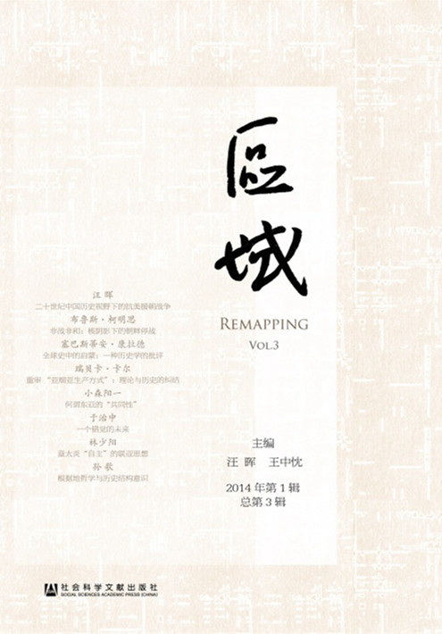

《区域》简介
《区域》由清华大学人文与社会科学高等研究所主办，为跨学科和跨文化的人文研究丛书，其宗旨是立足人文学科的具体问题，在跨学科和跨文化视野中探讨中国人文学科的新领域、新途径和新方法，力图在长期学术积累的基础上，形成新的学术范式。
最新一期
2014年第3辑亚洲研究论丛第三辑

《区域》第三辑于2014年11月由社会科学文献出版社出版。本辑论文围绕抗美援朝战争与历史叙述、全球史及其视野中的中国问题、东亚区域问题、日本学人的中国观及亚洲观等多个专题展开。作者包括汪晖、布鲁斯·柯明思(Bruce Cummings)、牛军、沈卫荣、小森阳一(Komori Yoichi)、于治中、孙歌等多位著名学者。
目录
全球史中的启蒙：一种历史学的批评（文/塞巴斯蒂安·康拉德）
重审“亚细亚生产方式”：理论与历史的纠结（文/瑞贝卡·卡尔）
接触和比照：“西藏问题”的国际背景（文/沈卫荣）
伊斯兰律法语境下的瓦哈比主义——“反恐战争”与当代伊斯兰教法的失衡（文/殷之光）
何谓东亚的“共同性”——现代日本的“民主”和“主权”（文/小森阳一）
一个错觉的未来——《意识形态的幽灵》简体版序（文/于治中）
章太炎“自主”的联亚思想——与日本早期左翼运动及亚洲主义、日英同盟、印度独立运动的关联（文/林少阳）
根据地哲学与历史结构意识——竹内好的毛泽东论（文/孙歌）
橘朴与战前日本对中国及东洋的知识建构（文/赵京华）